<ion-tabs>
  <!-- Bottom Navigation -->
  <ion-tab-bar slot="bottom" class="botnav">
    <ion-tab-button tab="account" routerLink="">
      
    </ion-tab-button>
    <ion-tab-button tab="account" routerLink="/achievement">
      
    </ion-tab-button>
    <ion-tab-button tab="contact" routerLink="/module-list">
      
    </ion-tab-button>
    <ion-tab-button tab="settings" routerLink="/import-modules">
      
    </ion-tab-button>
    <ion-tab-button tab="settings" routerLink="/user-profile">
      
    </ion-tab-button>
  </ion-tab-bar>
</ion-tabs>
<ion-footer>
    <ion-toolbar>
        <ion-row class="ion-justify-content-around">
            <ion-button color="none" routerLink="">
                
            </ion-button>
            <ion-button color="none" routerLink="/achievement">
                
            </ion-button>
            <ion-button color="none" routerLink="/module-list">
                

            </ion-button>
            <ion-button color="none" routerLink="/import-modules">
                
            </ion-button>
            <ion-button color="none" routerLink="/user-profile">
                
            </ion-button>
        </ion-row>
    </ion-toolbar>
</ion-footer>
